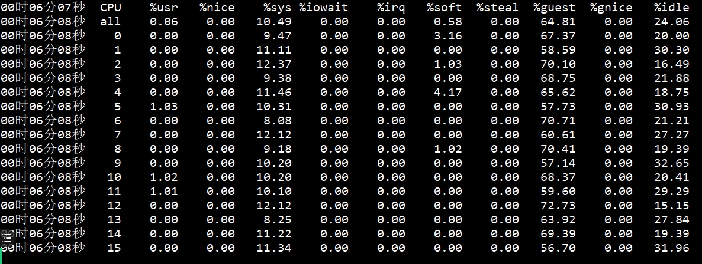

- 00 开篇词 打破四大认知局限，进阶高级性能工程师.md.html
- 01 性能工程：为什么很多性能测试人员无法对性能结果负责？.md.html
- 02 关键概念：性能指标和场景的确定.md.html
- 03 核心分析逻辑：所有的性能分析，靠这七步都能搞定.md.html
- 04 如何构建性能分析决策树和查找瓶颈证据链？.md.html
- 05 性能方案：你的方案是否还停留在形式上？.md.html
- 06 如何抽取出符合真实业务场景的业务模型？.md.html
- 07 性能场景的数据到底应该做成什么样子？.md.html
- 08 并发、在线和TPS到底是什么关系？.md.html
- 09 如何设计全局和定向监控策略？.md.html
- 10 设计基准场景需要注意哪些关键点？.md.html
- 11 打开首页之一：一个案例，带你搞懂基础硬件设施的性能问题.md.html
- 12 打开首页之二：如何平衡利用硬件资源？.md.html
- 13 用户登录：怎么判断线程中的Block原因？.md.html
- 14 用户信息查询：如何解决网络软中断瓶颈问题？.md.html
- 15 查询商品：资源不足有哪些性能表现？.md.html
- 16 商品加入购物车：SQL优化和压力工具中的参数分析.md.html
- 17 查询购物车：为什么铺底参数一定要符合真实业务特性？.md.html
- 18 购物车信息确定订单：为什么动态参数化逻辑非常重要？.md.html
- 19 生成订单信息之一：应用JDBC池优化和内存溢出分析.md.html
- 20 生成订单信息之二：业务逻辑复杂，怎么做性能优化？.md.html
- 21 支付前查询订单列表：如何分析优化一个固定的技术组件？.md.html
- 22 支付订单信息：如何高效解决for循环产生的内存溢出？.md.html
- 23 决定容量场景成败的关键因素有哪些？.md.html
- 24 容量场景之一：索引优化和Kubernetes资源分配不均衡怎么办？.md.html
- 25 容量场景之二：缓存对性能会有什么样的影响？.md.html
- 26 稳定性场景之一：怎样搞定业务积累量产生的瓶颈问题？.md.html
- 27 稳定性场景之二：怎样搞定磁盘不足产生的瓶颈问题？.md.html
- 28 如何确定异常场景的范围和设计逻辑？.md.html
- 29 异常场景：如何模拟不同组件层级的异常？.md.html
- 30 如何确定生产系统配置？.md.html
- 31 怎么写出有价值的性能报告？.md.html
- 我们这个课程的系统是怎么搭建起来的？.md.html
- 结束语 做真正的性能项目.md.html
- 捐赠
11 打开首页之一：一个案例，带你搞懂基础硬件设施的性能问题
你好，我是高楼。
这节课我要带你来看一个完整的性能分析案例的第一部分，用打开首页接口做压力场景，来分析下性能问题。通过这个案例，你将看到各种基础硬件设施层面的性能问题，比如由虚机超分导致的性能问题、CPU运行模式下的性能问题、IO高、硬件资源耗尽但TPS很低的问题等等。
如果你是从零开始做一个完整的项目，那么这些问题很可能是你首先要去面对的。并且，把它们解决好，是性能分析人员必备的一种能力。同时，你还会看到针对不同计数器采集的数据，我们的分析链路是不同的，而这个分析链路就是我一直强调的证据链，如果你不清楚可以再回顾一下第3讲。
通过这节课，我希望你能明白，有些性能问题其实并没有那么单一，而且不管性能问题出在哪里，我们都必须去处理。
好，不啰嗦了，下面我们就把打开首页接口的性能瓶颈仔细扒一扒。
看架构图
在每次分析性能瓶颈之前，我都会画这样一张图，看看这个接口会涉及到哪些服务和技术组件，这对我们后续的性能分析会有很大的帮助。
如果你有工具可以直接展示，那就更好了。如果没有，那我建议你不要自信地认为自己可以记住一个简单的架构。相信我，哪怕是在纸上简单画一画，都会对你后面的分析思路有很大的帮助。
回到上面这张图，我们可以清楚地看到这个打开首页的逻辑是：User - Gateway(Redis)- Portal - (Redis,MySQL)。
顺便看下代码逻辑
在做打开首页的基准场景之前，我建议你先看一眼这个接口的代码实现逻辑，从代码中可以看到这个接口在做哪些动作。根据这些动作，我们可以分析它们的后续链路。
这个代码的逻辑很简单，就是列出首页上的各种信息，然后返回一个JSON。
public HomeContentResult contentnew() {
HomeContentResult result = new HomeContentResult();
if (redisService.get("HomeContent") == null) {
//首页广告
result.setAdvertiseList(getHomeAdvertiseList());
//品牌推荐
result.setBrandList(homeDao.getRecommendBrandList(0, 6));
//秒杀信息
result.setHomeFlashPromotion(getHomeFlashPromotion());
//新品推荐
result.setNewProductList(homeDao.getNewProductList(0, 4));
//人气推荐
result.setHotProductList(homeDao.getHotProductList(0, 4));
//专题推荐
result.setSubjectList(homeDao.getRecommendSubjectList(0, 4));
redisService.set("HomeContent", result);
}
Object homeContent = redisService.get("HomeContent");
// result = JSON.parseObject(homeContent.toString(), HomeContentResult.class);
result = JSONUtil.toBean(JSONUtil.toJsonPrettyStr(homeContent), HomeContentResult.class);
return result;
}
我们可以看到，这里面一共调用了6个方法，并且这些方法都是直接到数据库里做了查询，如此而已。
确定压力数据
了解完代码逻辑后，我们上10个线程试运行一下，看看在一个个线程递增的过程中，TPS会有什么样的趋势。
运行之后，我们得到这样的结果：

从结果来看，在一开始，一个线程会产生40左右的TPS。这里我们就要思考一下了：如果想要执行一个场景，并且这个场景可以压出打开首页接口的最大TPS，我们应该怎么设置压力工具中的线程数、递增策略和持续执行策略呢？
对此，我们先看看Portal应用节点所在机器的硬件使用情况，了解一下TPS趋势和资源使用率之间的关系。这个机器的情况如下图所示（注意，我跳过了Gateway所在的节点）：

可以看到，当前Portal节点所在的机器是8C16G（虚拟机），并且这个机器基本上没什么压力。
现在我们先不计算其他资源，只考虑8C16G的配置情况。如果TPS是线性增长的话，那么当该机器的CPU使用率达到 100%的时候，TPS大概就是800左右。因此，我们压力工具中的线程数应该设置为：
\[ 线程数 = 800 TPS \\div 40 TPS = 20 个线程\]
不过，在压力持续的过程中，TPS和资源使用率之间的等比关系应该是做不到的。因为在压力过程中，各种资源的消耗都会增加一些响应时间，这些也都属于正常的响应时间损耗。
在确定了压力工具的线程数之后，我们再来看递增策略怎么设置。
我希望递增时间可以增加得慢一些，以便于我们查看各环节性能数据的反应。根据第2讲中的性能分析决策树，在这样的场景中，我们有不少计数器需要分析查看，所以我设置为30秒上一个线程，也就是说递增周期为600秒。
在确定好压力参数后，我们的试运行场景就可以在JMeter中设置为如下值：
<stringProp name="ThreadGroup.num_threads">20</stringProp>
<stringProp name="ThreadGroup.ramp_time">600</stringProp>
<boolProp name="ThreadGroup.scheduler">true</boolProp>
<stringProp name="ThreadGroup.duration">700</stringProp>
设置好试运行参数后，我们就可以在这样的场景下进一步设置足够的线程来运行，以达到资源使用率的最大化。
你可能会疑惑：难道不用更高的线程了吗？如果你想做一个正常的场景，那确实不需要用更高的线程了；如果你就是想知道压力线程加多了是什么样子，那你可以试试。我在性能场景执行时，也经常用各种方式压着玩。
不过，话说回来，确实有一种情况需要我们正儿八经地增加更多的压力，那就是你的响应时间已经增加了，可是增加得又不多，TPS也不再上升。这时候，我们拆分响应时间是比较困难的，特别是当一些系统很快的时候，响应时间可能只是几个毫秒之间。所以，在这种情况下，我们需要多增加一些线程，让响应时间慢的地方更清晰地表现出来，这样也就更容易拆分时间。
通过压力场景的递增设置（前面算的是只需要20个线程即可达到最大值，而这里，我把压力线程设置为100启动场景，目的是为了看到递增到更大压力时的TPS趋势以及响应时间的增加，这样更容易做时间的拆分），我们看到这个接口的响应时间确实在慢慢增加，并且随着线程数的增加，响应时间很快就上升到了几百毫秒。这是一个明显的瓶颈，我们自然是不能接受的。

接下来，我们就要好好分析一下这个响应时间究竟消耗到了哪里。
拆分时间
我们前面提到，打开首页的逻辑是：User - Gateway(Redis)- Portal - (Redis,MySQL)，那我们就按照这个逻辑，借助链路监控工具SkyWalking把响应时间具体拆分一下。

- User —Gateway之间的时间消耗

我们看到，User - Gateway之间的时间消耗慢慢上升到了150毫秒左右。
- Gateway响应时间

gateway上也消耗了150毫秒，这就说明user到gateway之间的网络并没有多少时间消耗，在毫秒级。
- Gateway —Portal之间的时间消耗
在Portal上，响应时间只消耗了50毫秒左右。我们再到Portal上看一眼。
- Portal响应时间
Portal的响应时间是50毫秒左右，和我们上面看到的时间一致。
通过上述对响应时间的拆分，我们可以确定是Gateway消耗了响应时间，并且这个时间达到了近100毫秒。所以，我们下一步定位的目标就是Gateway了。
定位Gateway上的响应时间消耗
第一阶段：分析st cpu
既然Gateway上的响应时间消耗很高，我们自然就要查一下这台主机把时间消耗在了哪里。
我们的分析逻辑仍然是先看全局监控，后看定向监控。全局监控要从整个架构开始看起，然后再确定某个节点上的资源消耗。注意，在看全局监控时，我们要从最基础的查起，而分析的过程中最基础的就是操作系统了。
通过top命令，我们可以看到Gateway节点上的资源情况，具体如下：

其中，st cpu达到了15%左右。我们知道，st cpu是指虚拟机被宿主机上的其他应用或虚拟机抢走的CPU，它的值这么高显然是不太正常的。所以，我们要进一步查看st cpu异常的原因。
我们用mpstat命令先来看看宿主机（运行Gateway的虚拟机所在的物理机）上的资源表现：

可以看到，CPU还有20%没有用完，说明宿主机还有空间。不过，宿主机的CPU使用率已经不小了，而消耗这些宿主机的就只有虚拟机里的应用。所以，我们要查一下是不是某个虚拟机的CPU消耗特别高。宿主机上的KVM列表如下：
[root@dell-server-3 ~]# virsh list --all
Id 名称 状态
----------------------------------------------------
12 vm-jmeter running
13 vm-k8s-worker-8 running
14 vm-k8s-worker-7 running
15 vm-k8s-worker-9 running
[root@dell-server-3 ~]#
可以看到，在这个宿主机上跑了四个虚拟机，那我们就具体看一下这四个虚拟机的资源消耗情况。
- vm-jmeter
top - 23:42:49 up 28 days, 8:14, 6 users, load average: 0.61, 0.48, 0.38
Tasks: 220 total, 1 running, 218 sleeping, 1 stopped, 0 zombie
%Cpu0 : 6.6 us, 3.5 sy, 0.0 ni, 88.5 id, 0.0 wa, 0.0 hi, 0.0 si, 1.4 st
%Cpu1 : 6.5 us, 1.8 sy, 0.0 ni, 88.2 id, 0.0 wa, 0.0 hi, 0.4 si, 3.2 st
KiB Mem : 3880180 total, 920804 free, 1506128 used, 1453248 buff/cache
KiB Swap: 2097148 total, 1256572 free, 840576 used. 2097412 avail Mem
PID USER PR NI VIRT RES SHR S %CPU %MEM TIME+ COMMAND
7157 root 20 0 3699292 781204 17584 S 27.8 20.1 1:09.44 java
9 root 20 0 0 0 0 S 0.3 0.0 30:25.77 rcu_sched
376 root 20 0 0 0 0 S 0.3 0.0 16:40.44 xfsaild/dm-
- vm-k8s-worker-8
top - 23:43:47 up 5 days, 22:28, 3 users, load average: 9.21, 6.45, 5.74
Tasks: 326 total, 1 running, 325 sleeping, 0 stopped, 0 zombie
%Cpu0 : 20.2 us, 3.7 sy, 0.0 ni, 60.7 id, 0.0 wa, 0.0 hi, 2.9 si, 12.5 st
%Cpu1 : 27.3 us, 7.4 sy, 0.0 ni, 50.2 id, 0.0 wa, 0.0 hi, 3.7 si, 11.4 st
%Cpu2 : 29.9 us, 5.6 sy, 0.0 ni, 48.5 id, 0.0 wa, 0.0 hi, 4.9 si, 11.2 st
%Cpu3 : 31.2 us, 5.6 sy, 0.0 ni, 47.6 id, 0.0 wa, 0.0 hi, 4.5 si, 11.2 st
%Cpu4 : 25.6 us, 4.3 sy, 0.0 ni, 52.7 id, 0.0 wa, 0.0 hi, 3.6 si, 13.7 st
%Cpu5 : 26.0 us, 5.2 sy, 0.0 ni, 53.5 id, 0.0 wa, 0.0 hi, 4.1 si, 11.2 st
%Cpu6 : 19.9 us, 6.2 sy, 0.0 ni, 57.6 id, 0.0 wa, 0.0 hi, 3.6 si, 12.7 st
%Cpu7 : 27.3 us, 5.0 sy, 0.0 ni, 53.8 id, 0.0 wa, 0.0 hi, 2.3 si, 11.5 st
KiB Mem : 16265688 total, 6772084 free, 4437840 used, 5055764 buff/cache
KiB Swap: 0 total, 0 free, 0 used. 11452900 avail Mem
PID USER PR NI VIRT RES SHR S %CPU %MEM TIME+ COMMAND
13049 root 20 0 9853712 593464 15752 S 288.4 3.6 67:24.22 java
1116 root 20 0 2469728 57932 16188 S 12.6 0.4 818:40.25 containerd
1113 root 20 0 3496336 118048 38048 S 12.3 0.7 692:30.79 kubelet
4961 root 20 0 1780136 40700 17864 S 12.3 0.3 205:51.15 calico-node
3830 root 20 0 2170204 114920 33304 S 11.6 0.7 508:00.00 scope
1118 root 20 0 1548060 111768 29336 S 11.3 0.7 685:27.95 dockerd
8216 techstar 20 0 2747240 907080 114836 S 5.0 5.6 1643:33 prometheus
21002 root 20 0 9898708 637616 17316 S 3.3 3.9 718:56.99 java
1070 root 20 0 9806964 476716 15756 S 2.0 2.9 137:13.47 java
11492 root 20 0 441996 33204 4236 S 1.3 0.2 38:10.49 gvfs-udisks2-vo
- vm-k8s-worker-7
top - 23:44:22 up 5 days, 22:26, 3 users, load average: 2.50, 1.67, 1.13
Tasks: 308 total, 1 running, 307 sleeping, 0 stopped, 0 zombie
%Cpu0 : 4.2 us, 3.5 sy, 0.0 ni, 82.3 id, 0.0 wa, 0.0 hi, 1.7 si, 8.3 st
%Cpu1 : 6.2 us, 2.7 sy, 0.0 ni, 82.8 id, 0.0 wa, 0.0 hi, 1.4 si, 6.9 st
%Cpu2 : 5.2 us, 2.8 sy, 0.0 ni, 84.0 id, 0.0 wa, 0.0 hi, 1.0 si, 6.9 st
%Cpu3 : 4.5 us, 3.8 sy, 0.0 ni, 81.2 id, 0.0 wa, 0.0 hi, 1.4 si, 9.2 st
%Cpu4 : 4.4 us, 2.4 sy, 0.0 ni, 83.3 id, 0.0 wa, 0.0 hi, 1.4 si, 8.5 st
%Cpu5 : 5.5 us, 2.4 sy, 0.0 ni, 84.5 id, 0.0 wa, 0.0 hi, 1.0 si, 6.6 st
%Cpu6 : 3.7 us, 2.7 sy, 0.0 ni, 85.6 id, 0.0 wa, 0.0 hi, 0.7 si, 7.4 st
%Cpu7 : 3.1 us, 1.7 sy, 0.0 ni, 84.7 id, 0.0 wa, 0.0 hi, 1.4 si, 9.0 st
KiB Mem : 16265688 total, 8715820 free, 3848432 used, 3701436 buff/cache
KiB Swap: 0 total, 0 free, 0 used. 12019164 avail Mem
PID USER PR NI VIRT RES SHR S %CPU %MEM TIME+ COMMAND
18592 27 20 0 4588208 271564 12196 S 66.9 1.7 154:58.93 mysqld
1109 root 20 0 2381424 105512 37208 S 9.6 0.6 514:18.00 kubelet
1113 root 20 0 1928952 55556 16024 S 8.9 0.3 567:43.53 containerd
1114 root 20 0 1268692 105212 29644 S 8.6 0.6 516:43.38 dockerd
3122 root 20 0 2169692 117212 33416 S 7.0 0.7 408:21.79 scope
4132 root 20 0 1780136 43188 17952 S 6.0 0.3 193:27.58 calico-node
3203 nfsnobo+ 20 0 116748 19720 5864 S 2.0 0.1 42:43.57 node_exporter
12089 techstar 20 0 5666480 1.3g 23084 S 1.3 8.5 78:04.61 java
5727 root 20 0 449428 38616 4236 S 1.0 0.2 49:02.98 gvfs-udisks2-vo
- vm-k8s-worker-9
top - 23:45:23 up 5 days, 22:21, 4 users, load average: 12.51, 10.28, 9.19
Tasks: 333 total, 4 running, 329 sleeping, 0 stopped, 0 zombie
%Cpu0 : 20.1 us, 7.5 sy, 0.0 ni, 43.3 id, 0.0 wa, 0.0 hi, 13.4 si, 15.7 st
%Cpu1 : 20.1 us, 11.2 sy, 0.0 ni, 41.4 id, 0.0 wa, 0.0 hi, 11.9 si, 15.3 st
%Cpu2 : 23.8 us, 10.0 sy, 0.0 ni, 35.4 id, 0.0 wa, 0.0 hi, 14.2 si, 16.5 st
%Cpu3 : 15.1 us, 7.7 sy, 0.0 ni, 49.1 id, 0.0 wa, 0.0 hi, 12.2 si, 15.9 st
%Cpu4 : 22.8 us, 6.9 sy, 0.0 ni, 40.5 id, 0.0 wa, 0.0 hi, 14.7 si, 15.1 st
%Cpu5 : 17.5 us, 5.8 sy, 0.0 ni, 50.0 id, 0.0 wa, 0.0 hi, 10.6 si, 16.1 st
%Cpu6 : 22.0 us, 6.6 sy, 0.0 ni, 45.1 id, 0.0 wa, 0.0 hi, 11.0 si, 15.4 st
%Cpu7 : 19.2 us, 8.0 sy, 0.0 ni, 44.9 id, 0.0 wa, 0.0 hi, 9.8 si, 18.1 st
KiB Mem : 16265688 total, 2567932 free, 7138952 used, 6558804 buff/cache
KiB Swap: 0 total, 0 free, 0 used. 8736000 avail Mem
PID USER PR NI VIRT RES SHR S %CPU %MEM TIME+ COMMAND
24122 root 20 0 9890064 612108 16880 S 201.0 3.8 1905:11 java
2794 root 20 0 2307652 161224 33464 S 57.7 1.0 1065:54 scope
1113 root 20 0 2607908 60552 15484 S 13.8 0.4 1008:04 containerd
1109 root 20 0 2291748 110768 39140 S 12.8 0.7 722:41.17 kubelet
1114 root 20 0 1285500 108664 30112 S 11.1 0.7 826:56.51 dockerd
29 root 20 0 0 0 0 S 8.9 0.0 32:09.89 ksoftirqd/4
6 root 20 0 0 0 0 S 8.2 0.0 41:28.14 ksoftirqd/0
24 root 20 0 0 0 0 R 8.2 0.0 41:00.46 ksoftirqd/3
39 root 20 0 0 0 0 R 8.2 0.0 41:08.18 ksoftirqd/6
19 root 20 0 0 0 0 S 7.9 0.0 39:10.22 ksoftirqd/2
14 root 20 0 0 0 0 S 6.2 0.0 40:58.25 ksoftirqd/1
很显然，worker-9的si（中断使用的CPU）和st（被偷走的CPU）都不算低。那这种情况就比较奇怪了，虚拟机本身都没有很高的CPU使用率，为什么st还这么高呢？难道CPU只能用到这种程度？
来，我们接着查下去。
第二阶段：查看物理机CPU运行模式
在这个阶段，我们要查一下服务里有没有阻塞。就像前面提到的，我们要从全局监控的角度，来考虑所查看的性能分析计数器是不是完整，以免出现判断上的偏差。不过，我去查看了线程栈的具体内容，看到线程栈中并没有Blocked啥的，那我们就只能再回到物理机的配置里看了。
那对于物理机CPU，我们还有什么可看的呢？即使你盖上被子蒙着头想很久，从下到上把所有的逻辑都理一遍，也找不出什么地方会有阻塞。那我们就只有看宿主机的CPU运行模式了。
-- 物理机器1
[root@hp-server ~]# cpupower frequency-info
analyzing CPU 0:
driver: pcc-cpufreq
CPUs which run at the same hardware frequency: 0
CPUs which need to have their frequency coordinated by software: 0
maximum transition latency: Cannot determine or is not supported.
hardware limits: 1.20 GHz - 2.10 GHz
available cpufreq governors: conservative userspace powersave ondemand performance
current policy: frequency should be within 1.20 GHz and 2.10 GHz.
The governor "conservative" may decide which speed to use
within this range.
current CPU frequency: 1.55 GHz (asserted by call to hardware)
boost state support:
Supported: yes
Active: yes
-- 物理机器2
[root@dell-server-2 ~]# cat /sys/devices/system/cpu/cpu0/cpufreq/scaling_governor
powersave
[root@dell-server-2 ~]# cpupower frequency-info
analyzing CPU 0:
driver: intel_pstate
CPUs which run at the same hardware frequency: 0
CPUs which need to have their frequency coordinated by software: 0
maximum transition latency: Cannot determine or is not supported.
hardware limits: 1.20 GHz - 2.20 GHz
available cpufreq governors: performance powersave
current policy: frequency should be within 1.20 GHz and 2.20 GHz.
The governor "powersave" may decide which speed to use
within this range.
current CPU frequency: 2.20 GHz (asserted by call to hardware)
boost state support:
Supported: no
Active: no
2200 MHz max turbo 4 active cores
2200 MHz max turbo 3 active cores
2200 MHz max turbo 2 active cores
2200 MHz max turbo 1 active cores
-- 物理机器3
[root@dell-server-3 ~]# cpupower frequency-info
analyzing CPU 0:
driver: intel_pstate
CPUs which run at the same hardware frequency: 0
CPUs which need to have their frequency coordinated by software: 0
maximum transition latency: Cannot determine or is not supported.
hardware limits: 1.20 GHz - 2.20 GHz
available cpufreq governors: performance powersave
current policy: frequency should be within 1.20 GHz and 2.20 GHz.
The governor "powersave" may decide which speed to use
within this range.
current CPU frequency: 2.20 GHz (asserted by call to hardware)
boost state support:
Supported: no
Active: no
2200 MHz max turbo 4 active cores
2200 MHz max turbo 3 active cores
2200 MHz max turbo 2 active cores
2200 MHz max turbo 1 active cores
-- 物理机器4
[root@lenvo-nfs-server ~]# cpupower frequency-info
analyzing CPU 0:
driver: acpi-cpufreq
CPUs which run at the same hardware frequency: 0
CPUs which need to have their frequency coordinated by software: 0
maximum transition latency: 10.0 us
hardware limits: 2.00 GHz - 2.83 GHz
available frequency steps: 2.83 GHz, 2.00 GHz
available cpufreq governors: conservative userspace powersave ondemand performance
current policy: frequency should be within 2.00 GHz and 2.83 GHz.
The governor "conservative" may decide which speed to use
within this range.
current CPU frequency: 2.00 GHz (asserted by call to hardware)
boost state support:
Supported: no
Active: no
可以看到，没有一个物理机是运行在performance模式之下的。
在这里，我们需要对CPU的运行模式有一个了解：
既然我们是性能分析人员，那自然要用performance模式了，所以我们把CPU模式修改如下：
-- 物理机器1
[root@hp-server ~]# cpupower -c all frequency-set -g performance
Setting cpu: 0
Setting cpu: 1
Setting cpu: 2
Setting cpu: 3
Setting cpu: 4
Setting cpu: 5
Setting cpu: 6
Setting cpu: 7
Setting cpu: 8
Setting cpu: 9
Setting cpu: 10
Setting cpu: 11
Setting cpu: 12
Setting cpu: 13
Setting cpu: 14
Setting cpu: 15
Setting cpu: 16
Setting cpu: 17
Setting cpu: 18
Setting cpu: 19
Setting cpu: 20
Setting cpu: 21
Setting cpu: 22
Setting cpu: 23
Setting cpu: 24
Setting cpu: 25
Setting cpu: 26
Setting cpu: 27
Setting cpu: 28
Setting cpu: 29
Setting cpu: 30
Setting cpu: 31
[root@hp-server ~]# cat /sys/devices/system/cpu/cpu0/cpufreq/scaling_governor
performance
[root@hp-server ~]#
-- 物理机器2
[root@dell-server-2 ~]# cat /sys/devices/system/cpu/cpu0/cpufreq/scaling_governor
powersave
[root@dell-server-2 ~]# cpupower -c all frequency-set -g performance
Setting cpu: 0
Setting cpu: 1
Setting cpu: 2
Setting cpu: 3
Setting cpu: 4
Setting cpu: 5
Setting cpu: 6
Setting cpu: 7
Setting cpu: 8
Setting cpu: 9
Setting cpu: 10
Setting cpu: 11
Setting cpu: 12
Setting cpu: 13
Setting cpu: 14
Setting cpu: 15
[root@dell-server-2 ~]# cat /sys/devices/system/cpu/cpu0/cpufreq/scaling_governor
performance
[root@dell-server-2 ~]#
-- 物理机器3
[root@dell-server-3 ~]# cat /sys/devices/system/cpu/cpu0/cpufreq/scaling_governor
powersave
[root@dell-server-3 ~]# cat /sys/devices/system/cpu/cpu0/cpufreq/scaling_governor
powersave
[root@dell-server-3 ~]# cpupower -c all frequency-set -g performance
Setting cpu: 0
Setting cpu: 1
Setting cpu: 2
Setting cpu: 3
Setting cpu: 4
Setting cpu: 5
Setting cpu: 6
Setting cpu: 7
Setting cpu: 8
Setting cpu: 9
Setting cpu: 10
Setting cpu: 11
Setting cpu: 12
Setting cpu: 13
Setting cpu: 14
Setting cpu: 15
[root@dell-server-3 ~]# cat /sys/devices/system/cpu/cpu0/cpufreq/scaling_governor
performance
[root@dell-server-3 ~]#
-- 物理机器4
[root@lenvo-nfs-server ~]# cpupower -c all frequency-set -g performance
Setting cpu: 0
Setting cpu: 1
Setting cpu: 2
Setting cpu: 3
[root@lenvo-nfs-server ~]# cat /sys/devices/system/cpu/cpu0/cpufreq/scaling_governor
performance
[root@lenvo-nfs-server ~]#
在我们一顿操作猛如虎之后，性能会怎么样呢？
结果，性能并没有好起来……这里我就不截图了，因为图和一开始的那张场景运行图一样。
在这里我们要知道，以上的分析过程说明不止是这个问题点，还有其他资源使用有短板我们没有找到。没办法，我们只能接着查。
总结
在这节课中，我们通过压力工具中的曲线，判断了瓶颈的存在。然后通过SkyWalking拆分了响应时间。
在确定了响应时间消耗点之后，我们又开始了两个阶段的分析：第一个阶段的证据链是从现象开始往下分析的，因为st cpu是指宿主机上的其他应用的消耗导致了此虚拟机的cpu资源被消耗，所以，我们去宿主机上去查了其他的虚拟机。这里我们要明确CPU资源应该用到什么样的程度，在发现了资源使用不合理之后，再接着做第二阶段的判断。
在第二阶段中，我们判断了CPU运行模式。在物理机中，如果我们自己不做主动的限制，CPU的消耗是没有默认限制的，所以我们才去查看CPU的运行模式。
但是，即便我们分析并尝试解决了以上的问题，TPS仍然没什么变化。可见，在计数器的分析逻辑中，虽然我们做了优化动作，但系统仍然有问题。只能说我们当前的优化手段，只解决了木桶中的最短板，但是其他短板，我们还没有找到。
请你注意，这并不是说我们这节课的分析优化过程没有意义。要知道，这些问题不解决，下一个问题也不会出现。所以，我们这节课的分析优化过程也非常有价值。
下节课，我们接着来找打开首页接口的性能瓶颈。
课后作业
最后，请你思考一下：
- 为什么我们看到虚拟机中st cpu高，就要去查看宿主机上的其他虚拟机？如果在宿主机上看到st cpu高，我们应该做怎样的判断？
- CPU的运行模式在powersave时，CPU的运行逻辑是什么？
记得在留言区和我讨论、交流你的想法，每一次思考都会让你更进一步。
如果这节课让你有所收获，也欢迎你分享给你的朋友，共同学习进步。我们下一讲再见！
© 2019 - 2023 Liangliang Lee. Powered by gin and hexo-theme-book.